Built on Google Gemini
Point it at a car.
Keep the card.
MotorDex turns real cars you see on the street into a collection. Photograph one, Gemini works out what it is, and it becomes a card in your dex.
Free on iPhone · 4.9 from 650+ ratings · 2,073 cars to find
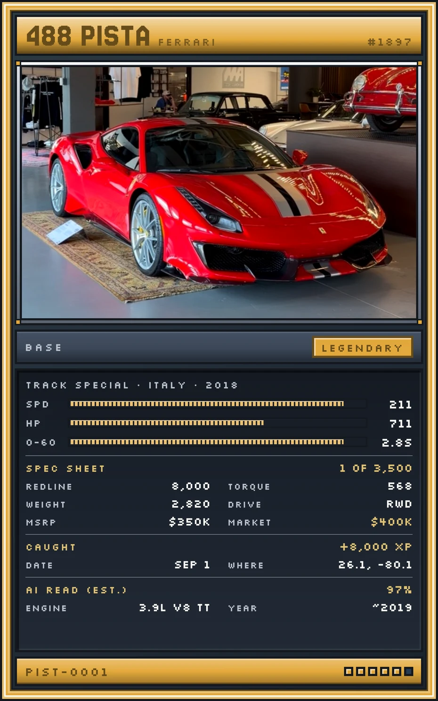
How it works
Three steps, about two seconds
-
1
Photograph it
Hold your phone up and press the red key. No forms, no list of makes to scroll through.
-
2
Gemini reads it
Google Gemini looks at the photo and works out the make, the model and the year. That is the hard part.
-
3
Keep the card
The car is graded and minted into your dex, pinned to the spot where you found it.
In the app
Scan, catch, collect
Every screen here is the shipping iPhone app.
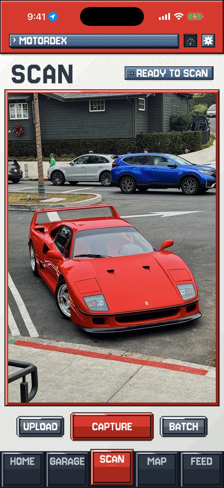
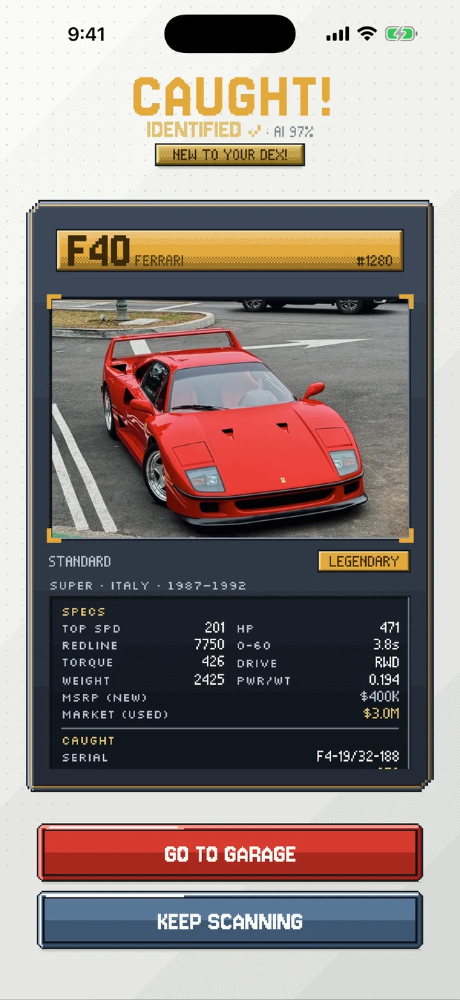
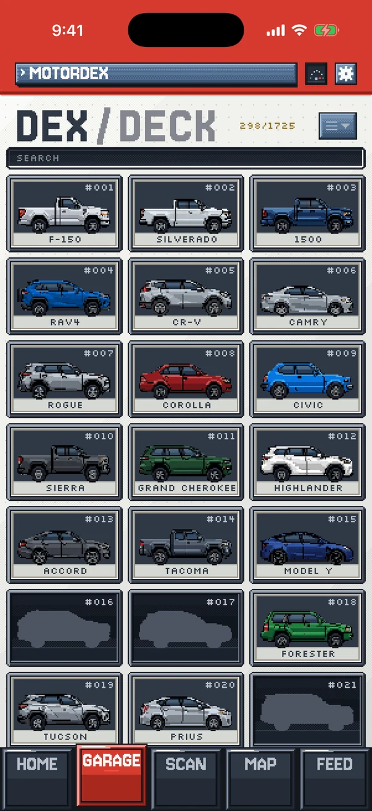
What you collect
Six grades, Common to Mythic
Gemini says what the car is. How rare it is isn't up to the model — a Corolla is Common for everyone, everywhere, every time.
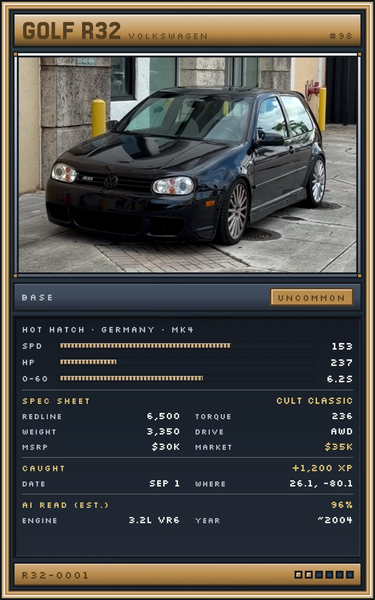
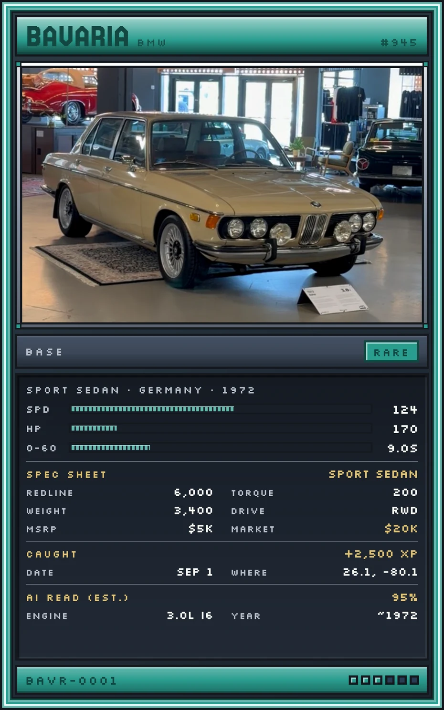
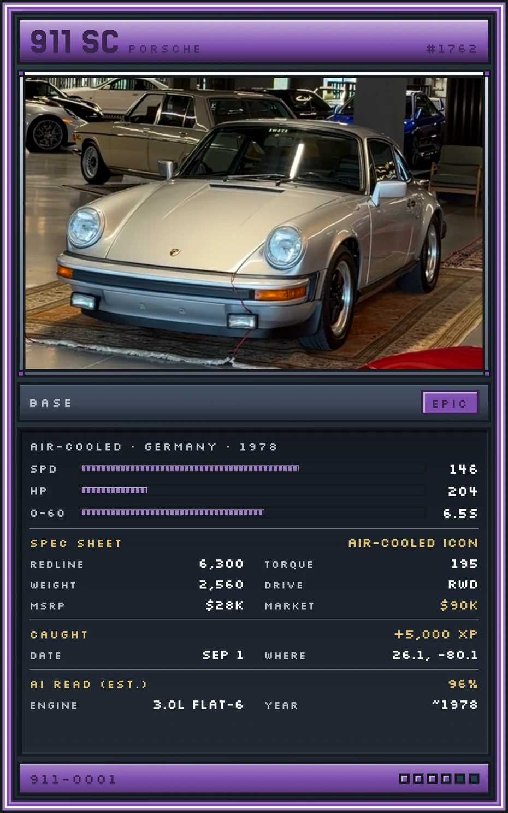
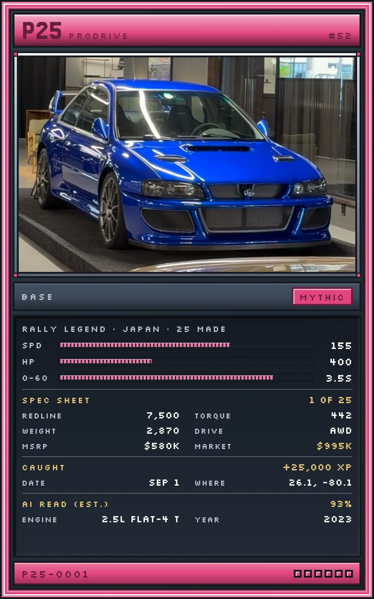
What a card tells you
No two cards are the same
A serial that means something
Every card is stamped with the car's code and a serial — and that serial is how many times that car has been caught by anyone, anywhere. Catch the 1,482nd Mustang and your card reads 1,482 for good.
The whole spec sheet
Top speed, horsepower and 0–60 fill as bars when the card opens, with redline, torque, weight and drivetrain underneath. Plus what it cost new against what it is worth now, and a "1 of 500" stamp when the real car was built in tiny numbers.
Your photo, your note
The photo you took is the card art. Open the original full screen, save it, or reframe how the car sits in the window. You can add a private note to any card — where you found it, what it sounded like — that nobody else ever sees.
Where you found it
Every catch gets a pin
Each card remembers where it was caught. Your map fills in as you go — a record of everything you have spotted and exactly where.
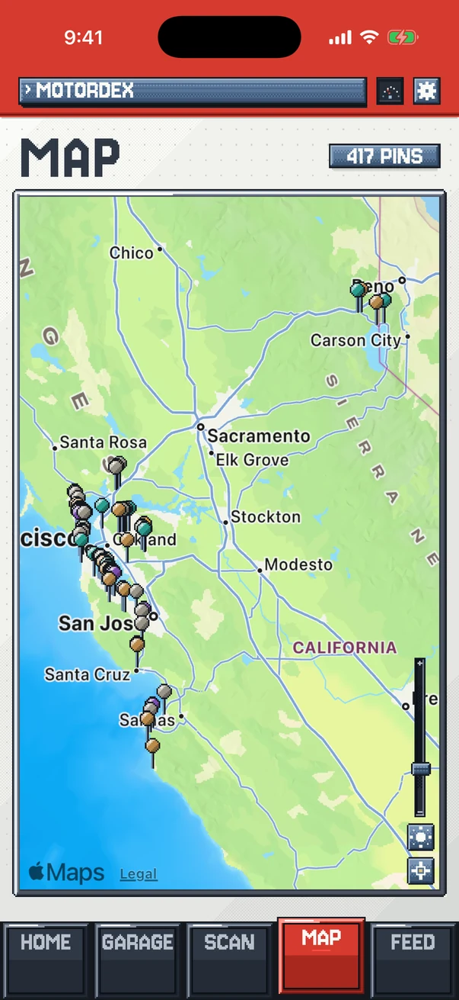
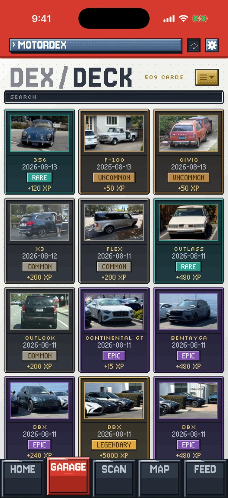
Two ways to see it
A dex and a deck
The dex has a slot for all 2,073 cars: the ones you have caught in colour, the rest as grey silhouettes, so you can see the shape you are hunting before you find it.
Flip the title and you get your deck instead — every card you have ever minted, newest first. Search a make or a model, sort by rarity or by when you caught it, or narrow the grid to one marque.
The catalogue
Every car has its own page
Tap a car you have caught and you get its entry: the years it was built, where it came from, its class, how many were made, its story and a fact worth knowing. All 2,073 have one written — not just the famous ones.
Long-lived nameplates list every generation, and the eras you have actually caught light up gold while the rest stay grey.
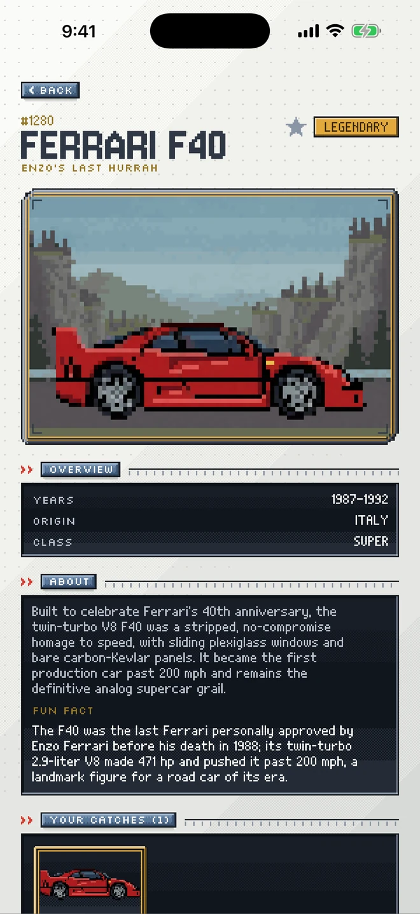
Built on Google Gemini
Gemini also drew the cars
Every car in the catalogue has its own pixel sprite, drawn with Gemini's image model — as were the class backdrops and the card art.
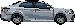
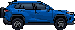
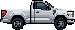
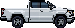
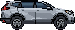
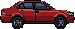
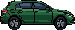
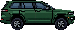
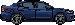
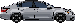
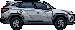
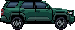
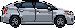
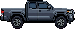
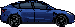
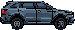
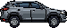
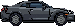
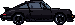
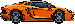
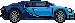
24 of them, at native size — exactly as the app draws them
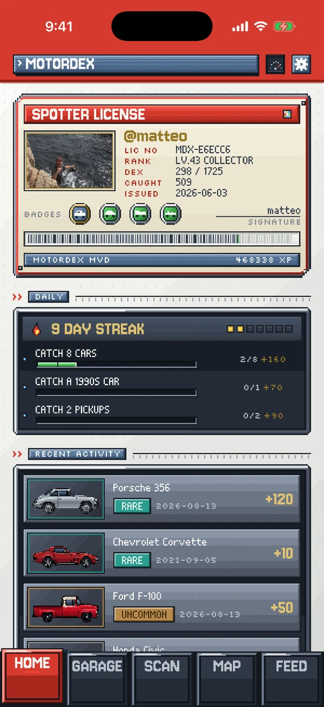
Who you are in the app
Your spotter licence
The home screen is an ID card: your handle, a licence number, your rank and level, how much of the catalogue you have found, your lifetime catch count and the date you joined.
Pick any car you have caught to stand in the photo window, or use a picture of your own. Tap the banner and the whole licence renders out as an image you can post.
The spotter's road
Twelve ranks, Novice to Legend
Every catch pays XP, and the barcode across your licence is the bar that fills. Levels bundle into twelve ranks — a climb from Novice all the way to Legend.
- Novice
- Spotter
- Scout
- Tracker
- Enthusiast
- Collector
- Curator
- Veteran
- Master
- Elite
- Champion
- Legend
Drag to see the whole climb
A car new to your dex pays the most. A better example of one you already own still pays well. Photographing the same car over and over does not — the game pays you for finding something, not for firing the shutter.
Every day, a new set
Three things to do today
Three goals a day
Dealt from a pool of a hundred: catch a 1990s car, catch three body types, catch from three regions, catch something with a sub-four-second 0–60. Each has a bar that fills as you catch, and XP to collect when it is full.
Keep the streak
Catch at least one car and a flame keeps your day count running. Miss a whole day and it goes out and starts again. Your best run ever is kept on your licence.
Picked up where you left off
Open the app after a day out and a card recaps what you caught last time, best find first, and the streak you are keeping alive.
What you have done
A wall of medals
Badges track the collecting you do without thinking about it: body styles, decades, places you have spotted in, streaks, your first Legendary, and a medal for every marque as you work through its cars.
Most climb copper to silver to gold, and the board shows how far you are from all‑gold. You pin four of them onto your licence.
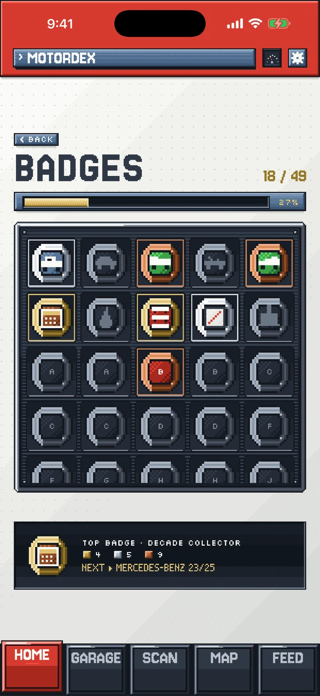
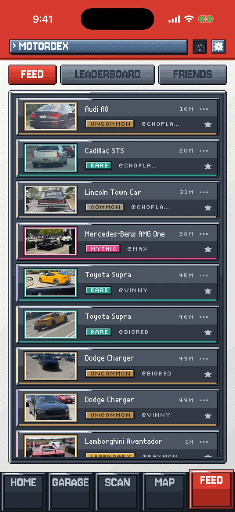
Who else is out there
Friends, by code
Every spotter gets a code of their own. Type a friend's in and their catches land in your feed, newest first, with a star you can leave on anything good.
Open a friend and you get their licence and their whole dex, and each car's page tells you which of your friends already has it. Their cards never carry a location, and neither do yours.
Leaderboard
The board starts over every month
A world board ranks spotters for the month you are in — by cars caught, by different cars, or by XP — with a clock counting down to the reset, so every month everyone starts level. Your friends have their own standing board beside it, and one switch keeps you off the public one entirely.
Where it stands
Live, and growing
Start your dex
Free to download and play. 2,073 cars are out there.
4.9 from 650+ ratings